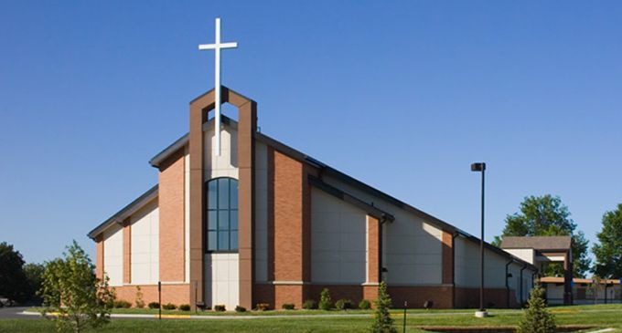

Community Fellowship Church
MATT 8:8B - BUT JUST SAY THE WORD AND MY SERVANT WILL BE HEALED.
MATT 8:8B - BUT JUST SAY THE WORD AND MY SERVANT WILL BE HEALED.

We are thrilled to welcome you to the Community Fellowship family! We are a community that Believes in reaching out to the community with love as in the book of Acts.